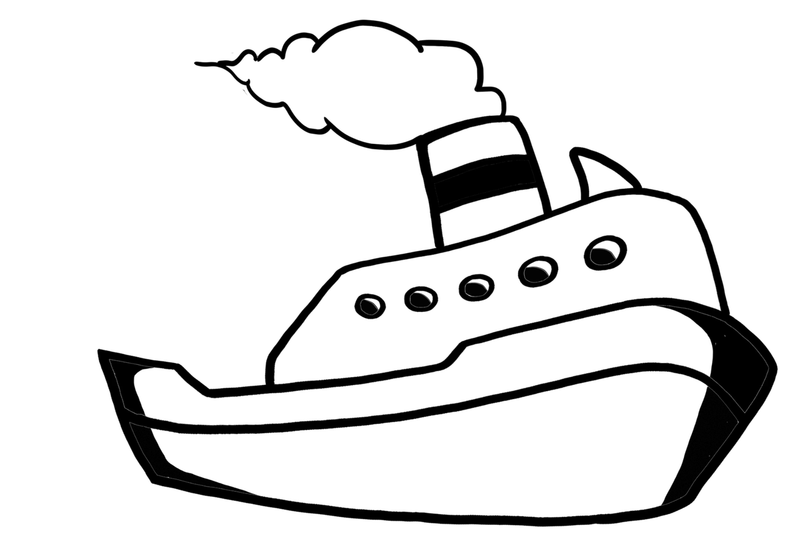

Transports
It is very easy to travel between the Gilis, and we have bargained for you to get cheaper transportation, or at least the same price as anybody else here. So do not hesitate to contact us to book your ticket. It would be a shame to miss it.

The old-fashioned public boat between the islandsGili island hopping
Public boats run twice a day in each direction for 40K; private boats run every hour for 85K.
| Route | Public boat (40K) | Private boat |
|---|---|---|
| Gili Meno → Gili Trawangan | 8.50am, 3.20pm | 85K, every hour |
| Gili Trawangan → Gili Meno | 9.30am, 4.00pm | 85K, every hour |
| Gili Meno → Gili Air | 9.50am, 4.20pm | 85K, every hour |
| Gili Air → Gili Meno | 8.30am, 3.00pm | 85K, every hour |
To and from Lombok
Public boats link Gili Meno and Bangsal every day for 25K: from Gili Meno at 8am and 3.30pm, from Bangsal at 10am, 2pm and 5pm. To go to or leave Bangsal we have special prices for shuttles and taxis.
| From / to | Option | Price |
|---|---|---|
| Gili Meno ↔ Bangsal (Lombok) | Public boat: from Gili Meno 8am, 3.30pm; from Bangsal 10am, 2pm, 5pm | 25K |
| Bangsal ↔ Lombok Airport | Shuttle per person | 170K |
| Bangsal ↔ Lombok Airport | Private taxi | 500K |
| Bangsal ↔ Kuta Lombok | Shuttle per person | 160K |
| Bangsal ↔ Kuta Lombok | Private taxi | 500K |
| Bangsal ↔ Senggigi or Mataram | Shuttle per person | 115K |
| Bangsal ↔ Senggigi | Private taxi | 250K |
| Bangsal ↔ Tetebatu | Private taxi | 450K |
| Bangsal ↔ Selong Belanak | Private taxi | 500K |
To and from Bali
Send us a WhatsApp, your ticket is booked in two minutes (or just ask at the reception), and we handle the rest: pick-up, check-in at the harbour, and a phone call to the boat company if anything is late or cancelled. Same price as on the boat company's own website. The two-way ticket is cheaper if you already know you will come back to Bali, and it is an open date return, so you do not need to decide when you leave us.
| Ticket | Price | Notes |
|---|---|---|
| Fast boat Bali ↔ Gili Meno (Semaya) | 430K | One way, boat only |
| Fast boat Bali ↔ Gili Meno (Semaya) | 530K | One way, with pick up in Bali |
| Fast boat Bali ↔ Gili Meno (Wijaya) | 450K | One way, boat only |
| Fast boat Bali ↔ Gili Meno (Wijaya) | 550K | One way, with pick up in Bali |
Fast boat timetable (Wijaya Perkasa)
Leaving Gili Meno
| To | Departure → arrival |
|---|---|
| Nusa Penida | 08:45 → 10:45 12:45 → 15:15 |
| Padang Bay | 09:00 → 11:00 11:15 → 13:15 15:30 → 17:30 |
| Sanur | 08:45 → 11:45 12:45 → 16:45 |
Coming to Gili Meno
| From | Departure → arrival |
|---|---|
| Gili Trawangan | 09:45 → 09:55 |
| Nusa Penida | 10:20 → 12:45 13:30 → 15:30 |
| Padang Bay | 09:00 → 11:00 11:30 → 13:15 13:30 → 15:30 |
| Sanur | 08:00 → 12:45 12:30 → 15:30 |
Checked every night on the boat company's website, last change 10/11/2026. Times can move with the weather: we confirm yours when you book.
You can also go directly to and from other places in Bali:
| Destination | Price | How |
|---|---|---|
| Sanur (Bali) or Nusa Penida | 550K | Fast boat from Gili Meno |
| Amed | Not available now |